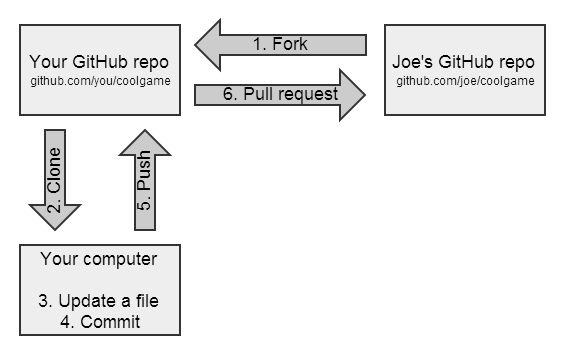

XGBoost
MAC安装
推荐使用源码安装，因为我尝试了其他方法，发现不行：
brew install gcc
git clone --recursive https://github.com/dmlc/xgboost
cd xgboost; cp make/config.mk ./config.mk
打开 config.mk，修改编译选项为
export CC = gcc-7
export CXX = g++-7
最后
make -j4
然后安装python包
cd python-package; sudo python setup.py install
最后设置环境变量PYTHONPATH，这里假设xgboost的文件夹的位置位于~/xgboost:
export PYTHONPATH=~/xgboost/python-package
跑demo
安装好了以后，当然要跑跑demo过过隐啦，一方面感受下xgboost的强大威力，另一方面熟悉一下基本流程
import xgboost as xgb
# read in data
dtrain = xgb.DMatrix('demo/data/agaricus.txt.train')
dtest = xgb.DMatrix('demo/data/agaricus.txt.test')
# specify parameters via map
param = {'max_depth':2, 'eta':1, 'silent':1, 'objective':'binary:logistic' }
num_round = 2
bst = xgb.train(param, dtrain, num_round)
# make prediction
preds = bst.predict(dtest)
demo数据都包含在xgboost文件夹下面了，直接在xgboost文件夹里面运行即可。
教程
详细的官方教程在Awesome XGBoost。
相关博客和链接有
2017/11/9
Git 学习笔记
1. git commit -m message内容写错，如何重新编辑
可以重新去编辑：git commit --amend
或者reset掉，重新来git reset --hard HEAD^
2. 将已有项目的某个目录分离成独立项目
3. Github的FORK功能？

4. Github的PULL REQUEST功能？
意即我改了你们的代码，你们拉回去看看吧 ！！！
See GitHub Help
2017/2/28


网络编程


2018/1/22

Copyright © 2015 Powered by MWeb, Theme used GitHub CSS.